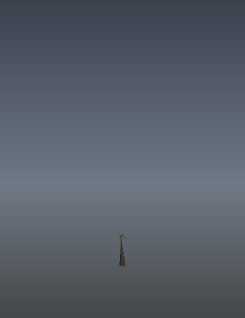
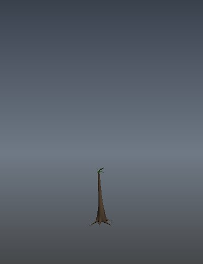
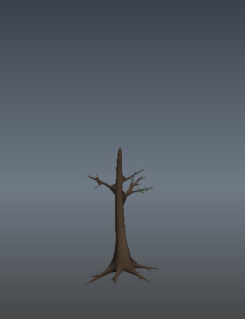
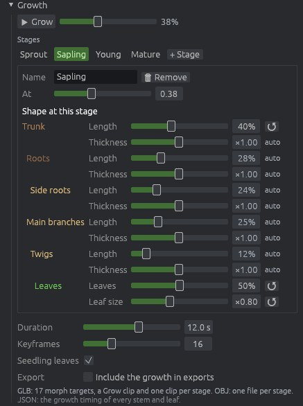

Growth animation
A tree can grow in your game: from a sprout to the mature tree you designed, through stages such as Sprout, Sapling, Young and Mature. You choose how many stages there are, where they sit and, per stage, how long, thick and leafy each part of the tree is. ArborStudio animates the growth on the tree's own mesh and exports it as morph targets with one animation clip per stage, which Godot, Unity and Unreal play without a plugin.





The Oak preset at five points of its growth, all from the same camera.
How a tree grows
Growth runs from 0 (nothing above the ground) to 1 (the tree as designed). On the way:
- Every branch is a small copy of its final shape that grows to full size. It lengthens from the point where it leaves its parent and thickens as it grows, and it carries its own twigs and leaves with it.
- The trunk grows the whole time, slowly at first. Side branches, twigs and roots start later the further out along their parent they sit, so lower branches are older and larger, and the crown fills in from the bottom up and from the inside out.
- A young shoot tapers to a point; it gets its full-size shape as it grows. Where a branch is joined to its parent (Branch joints), the opening in the parent's bark is only as wide as the branch is thick, so the joint stays closed and smooth at every stage.
- Leaves unfold from their stalk soon after their twig starts.
- With Seedling leaves on, a few leaves sit on the young shoot before the first side branches carry their own, so the sprout is green. They shrink away by 0.4 of the growth.
The mesh never changes its triangles; only its points move. At 1 it is exactly the tree you export without growth. This is what lets engines play the growth as morph targets (also called blend shapes or shape keys).
Age in Tree settings is different: it grows a new, younger tree with fewer branches, as a separate model. The growth animation always ends at the tree you designed.
Previewing the growth
Click ▶ Grow in the toolbar to play the growth in the viewport. The Growth section at the end of the Properties panel has the same button, a slider to scrub through the growth, and one button per stage to jump to it. The viewport header shows the point of the growth and the stage, for example Growth 38% (Sapling). Wind plays during the growth too.

Stages
Click a stage's button to show the tree there and edit the stage below the buttons:
- + Stage adds a stage where the preview slider stands (or in the middle of the largest gap when a stage is already there). Move the slider first to add a stage at a chosen point. Up to 8 stages.
- Name is optional. A stage without a name is called by its place, for example Stage 2; that label is also its clip and file name in exports.
- At moves the stage along the growth; Remove deletes it.
Shape at this stage
Each stage lists the generators of your tree, like the Generation panel. Every value starts as auto: what the automatic growth gives there, shown greyed. Drag a slider to set your own value; ↺ returns it to auto.
| Control | For | Range | Meaning |
|---|---|---|---|
| Length | Trunk, Branches, Roots | 0–100% | How far the stems of this generator have grown out, as a share of their total mature length. 40% on the trunk at the Sapling stage makes a tall, slender sapling. |
| Thickness | Trunk, Branches, Roots | ×0.05–×2 | Thickness relative to the automatic growth at this stage. A branch never gets thicker than the stem it grows out of. |
| Leaves | Leaves | 0–100% | The share of the leaves that are out. 0% gives bare branches at this stage. |
| Leaf size | Leaves | ×0.05–×2 | Leaf size relative to the automatic growth at this stage. |
Between stages the tree moves smoothly from one shape to the next. The stage at 1 is always the mature tree as you designed it, so it has no shape controls. Seedling leaves are not affected by the leaf controls.
Settings
| Setting | Range | Meaning |
|---|---|---|
| Stages | up to 8, each 0.01–1 | Moments of the growth, in growing order, each with an optional name and its shape per generator (see Stages above). The last stage is normally the mature tree at 1. |
| Duration | 0.5–600 s | How long the whole growth takes in the exported animation and the preview. |
| Keyframes | 4–48 | How many shapes the growth is sampled at. Every stage always gets one. More keyframes play more smoothly and make larger files. |
| Seedling leaves | on, off | A few leaves on the young shoot until the side branches carry their own. |
| Export | on, off | Exports include the growth animation. |
What gets exported
Turn on Include the growth in exports, then export as usual (Exporting). Levels of detail and the billboard grow along with LOD0.
| Format | Growth |
|---|---|
| GLB | Every mesh level gets one morph target per keyframe (morph target k is the tree at keyframe k; all weights 0 is the mature tree), and animations that drive the morph weights: Grow from nothing to the mature tree, and one clip per stage: the first stage's clip grows from nothing to it (Sprout), the others from the stage before (Sprout to Sapling, Sapling to Young, …). The file's extras list the stages, keyframes and clip times under growth. |
| OBJ | One more file per stage before the mature tree, for example oak_Sprout.obj and oak_Sapling.obj, for engines or tools that swap static models. |
| JSON | The growth timing of every stem and leaf (growth.timing) and how to apply it, for your own engine code or plugins. |
The GLB meshes also get a skin with a single bone that moves nothing. Some engines, Unreal among them, keep morph targets only on skinned meshes; the bone makes them import as such.
Each keyframe stores every point of the mesh once more. With 16 keyframes, the Oak preset with all levels and the billboard is about 15 MB as GLB instead of about 4 MB. Lower the keyframes, or export the growth without lower levels of detail, to keep files small.
In the engine
- Godot 4: the imported scene has an AnimationPlayer with Grow and the stage clips. Play a clip to grow to the next stage, or seek Grow to a time to show a stage. Tested by importing an exported Oak in Godot 4: 17 blend shapes per level and the five clips arrive.
- Blender: the meshes arrive with shape keys and one action per clip. Tested by importing and rendering the Grow action.
- Unity: with a glTF importer package (for example glTFast), the meshes import with blend shapes on a SkinnedMeshRenderer and the clips as animations.
- Unreal: import the GLB as a skeletal mesh; the morph targets and the clips' morph curves come with it.
Unity and Unreal were not tested with these files yet.
Regrowing a tree (after it was cut down, for example) is the same animation played again from the start.
Growth for agents
set_growth changes the stages (with their shape per generator: length, thickness, leaves, leaf_size, or null for auto), duration, keyframes, seedling leaves and the export default. It returns every stage with each generator's value there (set or automatic), the keyframes and the clips with their lengths in seconds. render_preview and set_view take growth (0–1) or growth_stage (a stage name or label such as Stage 2); set_view also takes growth_playing. export_tree and export_variations take include_growth.
set_growth {"stages": [{"name": "Sprout", "at": 0.1},
{"name": "Sapling", "at": 0.35, "generators": [{"id": 1, "length": 0.4}, {"id": 6, "leaves": 0.5}]},
{"at": 0.7}, {"name": "Grown", "at": 1}], "duration": 20}
render_preview {"growth_stage": "Sapling"}
export_tree {"path": "/path/to/Assets/oak.glb", "include_lods": true, "include_growth": true}